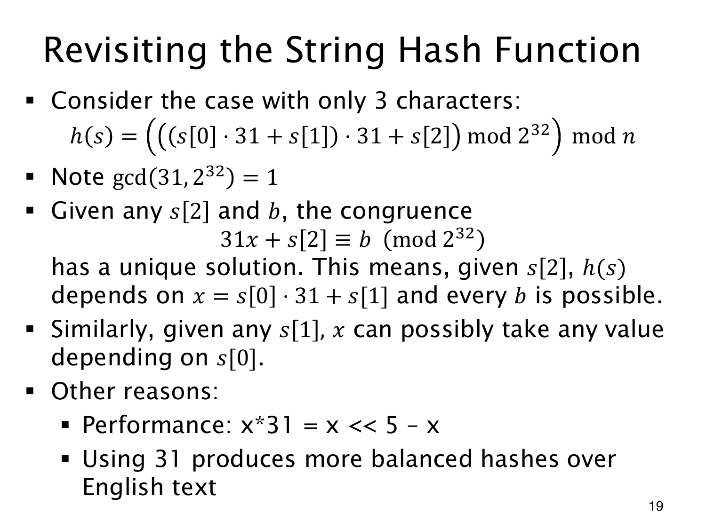

L1.13 · 第 19 页讲解原文
查看这一页课件

31 的逆元能保证哪一步可逆
三字符哈希先算 ((s[0]⋅31+s[1])31+s[2])mod232，再模 n。由于 31 是奇数、232 只有素因子 2，两者互素。
固定最后一个字符 c=s[2]，考虑
31x+c≡b(mod232).
对每个目标状态 b，都能用 31 的逆元求到唯一的 x。若 x 可以遍历整个机器状态域，这一步乘加便是一次一一重排，不会合并不同状态。
三字符字符串却有额外限制。编码范围有限时，x=s[0]⋅31+s[1] 无法遍历全部 232 个值。所以原页“每个 b 都可能”的说法需要完整状态域前提，不能据此认定短字符串哈希均匀或没有碰撞；最后模 n 还会再次压缩状态。
选择 31 也有计算上的理由：31x=32x−x，可写为 (x << 5) - x，括号明确先移位再减。至于英文文本上分布更平衡，是经验性的选参动机，仍须由具体数据验证。